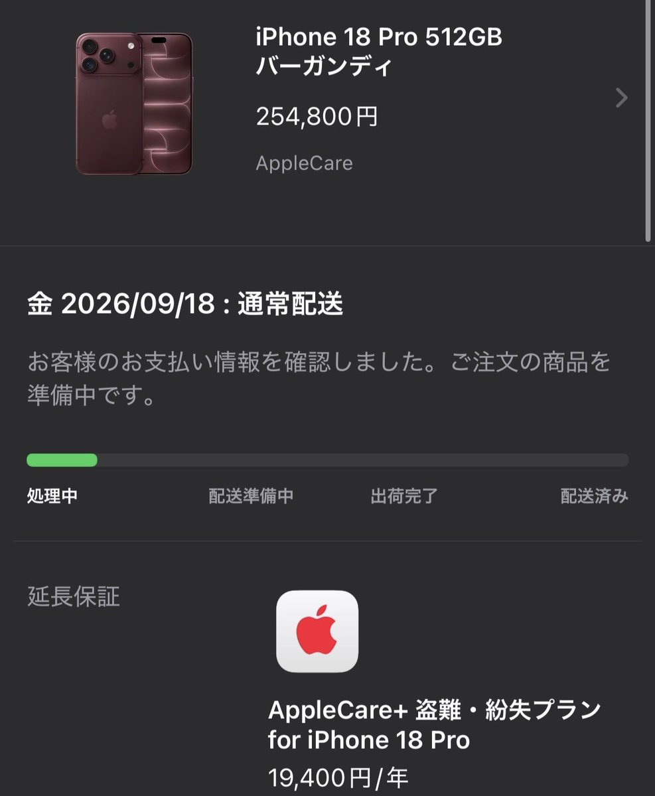

Aoi M
@aoim33
日本也出现了用低保买 iPhone Pro 系列手机然后被讨伐的现象
如果这东西真的是他自己省出来的，或者把推特创作者收益和低保一起拼起来得到的话其实没问题吧
毕竟推特收益如果完税确实属于个人收入，而且在日本用推特合法
所以为什么用低保买 iPhone 这件事情在东亚不受认可但是在欧洲却没问题？

無敵の生活保護
@seikatsuhogo_mu
生活保護でiPhone18 pro買いました
生活保護は貰えるお金が少ないからまともに暮らせないのでは？と不安な人も大丈夫です。安心して申請しましょう！ https://t.co/5fqXCN7A90